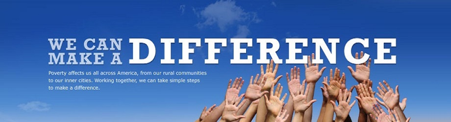
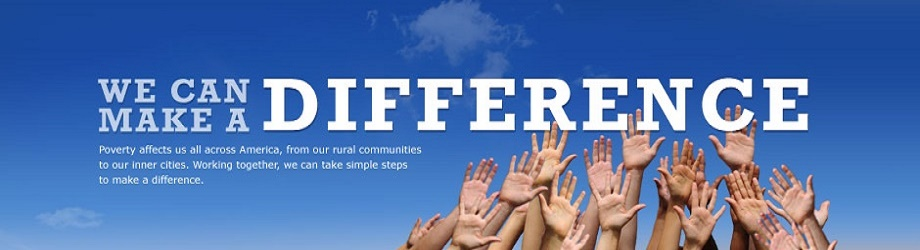

Our Response
Our response has been to launch a movement that believes positive change is possible in the public arena of politics, government, academia and the media. These are where societal values are displayed and debated, priorities are set and choices are made that deeply affect all citizens.
Ageless wisdom holds that how a society treats its most vulnerable is the truest measure of its character. That's why the core message of Citizen Voice is that citizens must be involved and the vulnerable must be protected. Our mission is to inspire, inform and involve citizens in the public arena on behalf of all, especially the vulnerable. We fulfill this mission by involving citizens in practical, immediate intervention and work towards long-term change. We recognize that a public system adrift from its moorings of collective integrity, compassion and wisdom will leave the vulnerable in its wake and we're willing to stand for these things...courageously.
Our work enables individual citizens to make a tangible difference. It refocuses societal attention on our foundational principles and brings the best of our past to bear on the worst of our present. Citizen Voice elevates the notion of proper stewardship of one's life and our collective blessings to its proper historic role. It makes us the best of who we are and who we want to be.